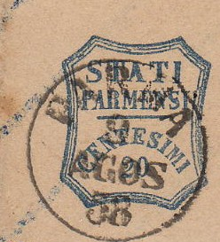
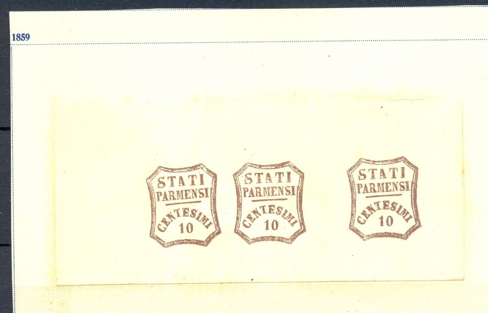
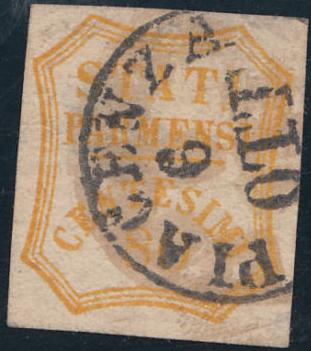

Fournier forgery of the 10 c value, taken from a 'Fournier Album of Philatelic Forgeries' on the backside of this forgery the words "FAC-SIMILE" are printed in slanting rows.
Return To Catalogue - Parma 1859 issue, part 1 - Parma 1859 issue, part 2 - Parma 1852 issue - Parma 1857 issue - Italy
Note: on my website many of the
pictures can not be seen! They are of course present in the
catalogue;
contact me if you want to purchase the catalogue. /p>
Fournier forgery of the 10 c value, taken from a 'Fournier Album
of Philatelic Forgeries' on the backside of this forgery the
words "FAC-SIMILE" are printed in slanting rows.



Fournier forgeries with "PARMA 9 AGOS 58" in a single
circle as cancel. Also a "BORGO 6 FEBR 59" in a single
circle cancel
It should be noted that Fournier also sold better forgeries (though they are not in his 1914 pricelist, but images can be found in Fourniers album of philatelic forgeries). A cancel that can be encountered is (among others): "BORGO 6 FEBR 59" in a single circle (this cancel can be seen in 'Fournier's album of philatelic forgeries'). Other cancels that are shown in this album are: "PARMA 13 AGO 1858" in a single circle, "PARMA 9 AGOS 58" in a single circle, "PARMA 15 MAG 1858"? in a single circle, "TERACINA 4 APR 67" in a double circle, "FOLIGNO 20 DIC 68" in a double circle and "CALDAROL" in a straight line.

Page from 'A Fournier Album'

Taken from a Fournier Album: a 'block' of three 10 c forgeries.

Other sheetlet with six forged 20 c Fournier forgeries, taken
from a Fournier Album.
Here a 'misprint' with a row of 20 c forgeries printed obliquely.

Other examples from the Fournier Album, except for the 5 c, all
of them are actually Spiro forgeries.

(Fournier forgeries, the second forgery is actually an 'enhanced'
Spiro forgery; the dotted Spiro cancel can still be seen at the
left bottom side)
(Fournier cancels, reduced sizes, page of the Fournier Album
listed as being used in the Papal States)

Forgery with "PIACENZA 6 OTT" cancel as can be found in
the Fournier Album.
Forged Fournier cancels of Italy, taken from a Fournier Album;
reduced sizes, among them the "PIACENZA 6 OTT" cancel

{kind=link}
{kind=link}
{kind=link}